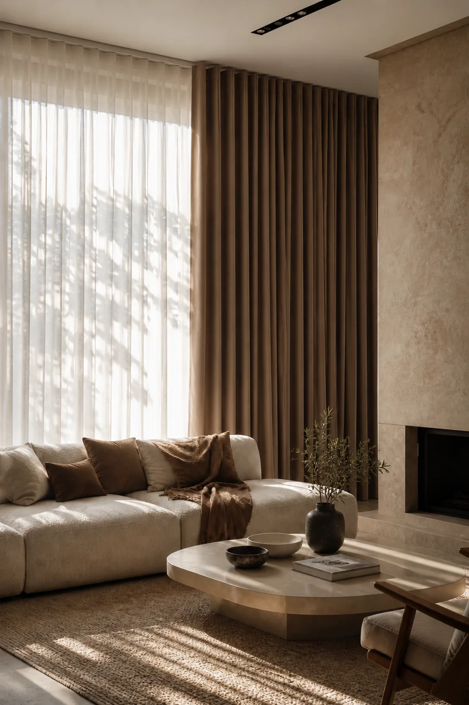

Confeccionadas a medida en Mallorca · Islas Baleares
Cada cortina es una pieza única: tejida, cortada y cosida exactamente para tus ventanas. Elige el estilo de confección que mejor se adapta a tu espacio — desde la elegancia contemporánea de la onda perfecta hasta el carácter artesanal de los lazos o las trabillas. La diferencia entre colgar una tela y vestir un hogar.
Onda perfecta, fruncida, pinza americana, pasabarra, pasavarilla, trabillas, lazos, onda imperfecta y plana.
Lino, algodón, terciopelo y mezclas de alta densidad — con cuerpo y una caída impecable que mejora con el tiempo.
Combina una cortina opaca con un visillo traslúcido. Privacidad total o luz tamizada según el momento del día.
Medición láser, patronaje individual y acabados artesanales incluidos. Sin coste adicional.
Pliegues uniformes con sistema Wave. Estética minimalista y contemporánea. La opción más elegante para espacios modernos.
El acabado clásico por excelencia. Ondas suaves y naturales con doble o triple frunce para máxima plenitud y volumen.
Pliegues planos y geométricos que aportan orden y estructura. Ideales para salones y dormitorios de estilo nórdico o clásico contemporáneo.
La tela pasa directamente por la barra sin argollas. Caída limpia y natural, aspecto muy relajado. Ideal para dormitorios y espacios informales.
Similar al pasabarra pero con una varilla fina en la parte superior e inferior. Crea un efecto muy limpio y estirado, muy utilizado en visillos y cocinas.
Presillas de tela cosidas que pasan por la barra. Acabado informal y artesanal, muy popular en casas rústicas, de campo o con estilo mediterráneo.
Se atan con un nudo a la barra. Toque artesanal y romántico. Perfectos para dormitorios, casas de campo o espacios con personalidad propia.
Versión más relajada de la onda perfecta. Pliegues libres que no siguen una cadencia exacta, creando una caída orgánica y llena de vida. Muy fotogénica.
Sin pliegues. La tela cae completamente estirada. Ideal para tejidos estructurados, estampados o cuando se quiere mostrar el tejido al máximo.
El plazo habitual es de 3 a 4 semanas desde la aprobación del pedido. Incluye el corte, el patronaje individual y los acabados artesanales. Para proyectos urgentes, consulta disponibilidad en la visita.
La onda perfecta (sistema Wave) da pliegues uniformes con un carril especial — es el acabado más minimalista y contemporáneo. El frunce es el clásico con ondas suaves y naturales. La cortina plana cae sin pliegues, ideal para tejidos estructurados y ambientes muy limpios.
Las trabillas son presillas de tela que pasan directamente por la barra, dando un acabado informal y natural. Los lazos se atan con un nudo, aportando un toque más artesanal y romántico. Ambas son ideales para casas de campo o espacios con personalidad.
Sí, es la combinación más habitual. Se instala un doble riel: el interior para el visillo traslúcido y el exterior para la cortina principal. Así consigues privacidad con luz durante el día y oscuridad por la noche.
Nuestro showroom móvil lleva el muestrario completo de tejidos y confecciones directamente a tu hogar en las Islas Baleares. Visita gratuita, sin compromiso.